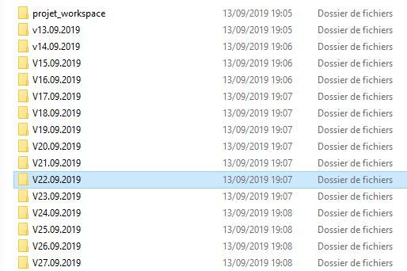

Compléments info, CM4
Git et test
DENEUVILLE Ludovic (sur la base des cours de Rémi Pépin)
ludovic.deneuville@ensai.fr
Le plan
- Git
- Pourquoi versionner ?
- Fonctionnement de git
- Commandes de base
- Git en entreprise
- Les tests
- Pourquoi tester ?
- Les différents types de tests
- Les tests unitaires
- Test Driven Development
Git

Source : commitstrip Lien
Pourquoi versionner ?
Une petites histoire : les bases
- Projet info 2A
- Groupe de 4
- Application en python
- Travail dans un dossier partagé
Terry le chef de projet
Jack et Charles : le deux copains
Emy : la lead développeuse
Une petites histoire : le dossier partagé
Quand Jack et Charles travaillent en même temps
- Les fichiers se verrouillent
- Ou alors ils sont modifiés sans qu'ils ne le sachent
- Impossible de lancer son code quand l'autre travail
Une petites histoire : emploi du temps et mail
L'équipe décide de faire un planning pour savoir qui travaille et d'envoyer le code par mail
- Du code se retrouve effacé suite à un copié/collé d'un mail
- Le dossier partagé n'est presque plus utilisé
- Impossible de savoir quels sont les codes les plus récents
- Terry passe plus de temps à savoir qui fait quoi qu'à coder ...
Une petites histoire : la démo
- Démo à faire à leur tuteur, Raymond Holt
- SAUF QUE rien ne fonctionne la veille
- Gros coup de pression sur l'équipe
- Nuit blanche pour corriger les bugs
En gros

Une petites histoire : le jour de la démo
- Le matin, rien ne fonctionne encore ...
- Mais Amy se souvient qu'elle a fait une sauvegarde du projet sur une clef usb !
- La démo a lieu avec la version d'il y a une semaine environ
- Et se passe mal ...
Le résultat
Une petites histoire : le projet à partir de là
Sauvegarde quotidienne du projet
Les petits problèmes
- Historique des modifications ?
- Différentiel entre les versions ?
- Comment savoir qui fait quoi ?
- Comment accéder au code si le serveur tombe ?
- Opération manuelle
Git la solution
Git
- Système de versionnage de code source
- Développé par Linus Torvalds pour dev noyau Linux
- Open source
- Décentralisé
- Plusieurs hébergements gratuits en ligne
Des hébergeurs pour git
- Github, propriétaire, acheté par microsoft en 2018 pour 7.5 milliards $
- Gitlab, open source (utilisé en interne à l'INSEE)
- Framagit (se base sur gitlab), open source
- Bitbucket, propriétaire
Le fonctionnement de git
L'architecture générale
- Un dépôt central (remote)
- Plein de dépôts locaux (clones)
- Des zones de transit
- Des "workspaces"
Dessin
Fonctionnement
- Clone du dépôt central (+historique)
- Modification du code de la workspace
- Envoi du code dans le dépôt local (via zone de transit)
- Envoi du différentiel du dépôt local dans le dépôt distant
- Seulement si on est à jour sur la remote
Les choses à retenir
- Il faut être à jour avant de pousser une version
- Plusieurs versions et historiques à un moment T
- Remote fait foi
- Possibilité de conflits de versions
- Mais seulement en local
Commandes de bases
Commandes de bases
Initialiser un dépôt
git init
Cloner un dépôt
git clone https://github.com/ludo2ne/R-tuto.git
git clone git@github.com:ludo2ne/R-tuto.git
Commandes de bases
Mettre en transit un fichier
git add fileName
Mettre en transit tout les fichiers
git add -A
git add .
Mettre en transit tous les fichier depuis un dossier
git add folder/
Faire un commit
git commit -m "message de commit"
Commandes de bases
Pousser mes modifications
git push
Récupérer les modifications de la remote et les mettre dans mon dépôt local + workspace
git pull
Récupérer les modifications de la remote et les mettre dans mon dépôt local
git fetch
Fusionner les modifications du dépôt local avec la workspace
git fetch origin/master
Commandes de bases
Voir les fichiers nouveaux, staged etc ...
git status
Voir les fichiers nouveaux, staged etc ... avec un meilleur niveau de détail
git status -u
Voir l'historique "joliment"
git log --all --decorate --oneline --graph
git log --pretty=format:'%C(yellow)%h %Cred%ad %Cblue%an%Cgreen%d %Creset%s' --date=relative
Git en entreprise
Git workflows

Source : lien
Gitflow
- Une branche avec la version la plus stable du code
- Une branche pour les corrections de bug rapides
- Une branche pour des versions stable utilisables en interne
- Une branche utilisée par les dev
- Des branches pour les ajouts de fonctionnalité
Pour conclure
- Git est un outil agnostique à la technologie (s'utilise avec R aussi !!!)
- Permet de partager facilement son code source
- Ainsi que l'historique pour remonter en arrière
- Gestion des branches pour versions en parallèle
- Très robuste car décentralisé
- Petit coût d'entrée
- La gestion des conflits prend du temps
Pour conclure

Source : commitstrip Lien
Question
Les tests

Source : commitstrip Lien
Pourquoi tester ?
Des exemple de tests
- Crash test de voiture
- POÄNG (Ikea) et leur résistance XXX assises
- Tests qualités en industrie
- Tests statistiques
- ...
Définition
“En informatique, un test désigne une procédure de vérification partielle d'un système. Son objectif principal est d'identifier un nombre maximum de comportements problématiques du logiciel. Il permet ainsi, dès lors que les problèmes identifiés seront corrigés, d'en augmenter la qualité.
D'une manière plus générale, le test désigne toutes les activités qui consistent à rechercher des informations quant à la qualité du système afin de permettre la prise de décisions.
Un test ressemble à une expérience scientifique. Il examine une hypothèse exprimée en fonction de trois éléments : les données en entrée, l'objet à tester et les observations attendues. Cet examen est effectué sous conditions contrôlées pour pouvoir tirer des conclusions et, dans l'idéal, être reproduit ”
En résumé
- Aucun test n'est parfait !
- Donne seulement une information partielle de la qualité de votre application
- Permet de détecter des "erreurs"
- Et de les corriger si vous êtes conciencieux
- Il y en a plusieurs types
- Et ils doivent être reproductibles !
Pourquoi tester ? (à votre niveau)
- Eviter les erreurs quand vous codez
- Eviter les régressions quand vous modifiez le code
- Car on vous note dessus
Quoi tester dans une application ?
- Les fonctions unitairement
- Les modules entre eux
- Les use case en entier
- La navigation dans l'ihm
- La résistance au nombre d'utilisateurs
- La résistance aux intrusions
- ...
Les tests associés
- Tests unitaires
- Tests d'intégration
- Tests fonctionnels
- Tests d'IHM
- Tests de charge
- Test d'intrusion
Quand tester ?
Quand tester ?
Plus on teste tôt et plus les tests sont efficaces et peu coûteux !
Le Test Driven Developpment (TDD)
Pratique qui consiste à écrire les tests AVANT de coder
- On commence par écrire un test (inputs, objet à tester, outputs)
- Puis on définit les fonctions nécessaires pour lancer le test
- On lance le test -> echec
- On code la fonction pour une réussite minimale -> réussite
- On met à jour la fonction -> refactor
Le Test Driven Developpement (TDD)

Par Xarawn — Travail
personnel
,
CC
BY-SA 4.0, Lien
Avantages du TDD
- Grande quantité de tests
- Rassurant
- Limite le code inutile
Inconvenients du TDD
- Beaucoup de temps à faire des tests
- Il faut maintenir les tests
Les tests unitaires
Les tests unitaires
- Vérifie qu'une méthode fait bien ce qu'elle doit faire
- Cas nominaux (doivent fonctionner)
- Cas d'erreur (doivent lever une erreur)
- Cas à la marge (ça dépend)
- Tests à la charge des développeurs
Architecture d'un test unitaire
def test_ma_fonction():
# GIVEN -> Inputs
expected_result =
mes_parametres =
# WHEN -> Le traitement à tester
actual_result = ma_fonction(mes_parametres)
# THEN
#Des petits traitements supplémentaires comme nettoyer la base
self.assertEqual(actual_result, expected_result)
Architecture d'un test unitaire
def test_compute_damage(self):
# GIVEN
power = 100
basic_hit = FixedDamageAttack(power=power)
pikachu = AttackerPokemon()
venusaur = AttackerPokemon()
# WHEN
damage = basic_hit.compute_damage(pikachu, venusaur)
# THEN
self.assertEqual(power, damage)
Cas du random
def test_choose_attack_1(self):
# GIVEN
tonnerre = SpecialFormulaAttack(power=30, description="{pokemon} fait tomber la foudre sur son adversaire", name="Tonnerre")
vive_attaque = PhysicalFormulaAttack(power=35, description="{pokemon} fonce sur l'ennemi si rapidement qu'on parvient à peine à le discerner.", name="Vive attaque")
pikachu = AttackerPokemon(name="pikachu", common_attacks=[tonnerre,vive_attaque])
battle_service = BattleService()
random.seed(1) # no crit, choose tonnerre
# WHEN
choosen_attack = battle_service.choose_attack(pikachu)
# THEN
self.assertEqual(tonnerre, choosen_attack)
Cas des classes abstraites
@patch.multiple(AbstractPokemon, __abstractmethods__=set())
def test_get_order_draw(self):
# GIVEN
speed_pikachu = 50
speed_charizard = 22
pikachu = AbstractPokemon(stat_current=Statistic(speed=speed_pikachu))
charizard = AbstractPokemon(stat_current=Statistic(speed=speed_charizard))
battle_service = BattleService()
random.seed(1) # les deux nombres générés seront 8 et 36 (draw), 48 and 4
# WHEN
first, second = battle_service.get_order(pikachu, charizard)
# THEN
self.assertEqual(pikachu, first)
self.assertEqual(charizard, second)
C'est quoi un bon test unitaire ?
- Teste qu'UNE chose
- Le plus isolé possible
- Un assert "simple"
- Commenté
- Maintenable
Les limites des tests

Source : commitstrip Lien
La couverture de test
- Indicateur simple à calculer
- Mais pas très fiable
- Facile de faire des "faux tests"
- Préférer faire peu de tests utiles que beaucoup de tests inutiles
- 80% des problèmes viennent de 20% du code
Une activité à part
- Test unitaire : pour le dev
- Les autres : rôle du testeur (responsable qualité)
- Expertise sur comment mener des tests
- Indépendant de l'équipe
- Permet d'éviter les "faux tests"
Résumé des tests
- Tester dès le début
- Les tests ne sont jamais parfaits
- Mais c'est mieux que rien
- Informe sur la qualité de l'application
- Cas nominal/erreur/marge
- Structure GIVEN/WHEN/THEN